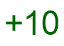
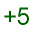
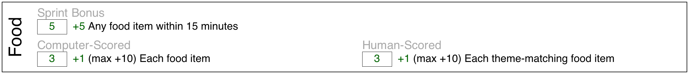

7.0
7 Enemy Katas
7.1 Air Enemy Kata (1 minutes)

Review/Introduce: core values
Extra Dollars for: lively discussion
Tip: This is a good kata to learn as a team or in small groups.
To earn this Kata  students should be able to recite
the amount of points they get from having a custom Enemy in their game.
Enemy points:
* Each enemy (max 5) - 1 point.
* Any enemy within 20 minutes (sprint bonus) - 5 points.
* For each enemy matching the theme (max 5) - 1 point.
7.2 Bronze Enemy Kata (5 minutes)

Tip: Students should be encouraged to add other game attributes; e.g. coins, food items.
To earn this Kata  students should be able to translate any sentence of this type:
Write the shortest program that creates a game with an avatar and a custom enemy.
To corresponding code of this type:
7.3 Silver Enemy Kata (5 minutes)


Tip: Students should run the function (show-enemy-sprites) on the interactions window to see a list of enemy sprites.
To earn this Kata  students should be able to translate any sentence of this type:
Make a game that has an avatar and several enemies with custom ai levels and sprites.
To corresponding code of this type:
| #lang survival |
| (define (my-enemy) |
| (custom-enemy #:ai 'medium |
| #:sprite bat-sprite |
| #:amount-in-world 5)) |
| (survival-game |
| #:avatar (custom-avatar) |
| #:enemy-list (list (my-enemy))) |
7.4 Gold Enemy Kata (10 minutes)


Tip: The order of the keywords does not matter.
To earn this Kata students should be able to translate any sentence of this type:
Make a game that has an avatar and an enemy with a custom weapon and dart.
To corresponding code of this type: